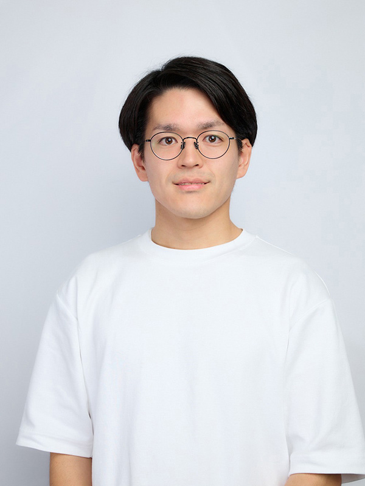

関 優希
SEKI YUKI
- About Me
- はじめまして。“OSECHI DESIGN”の関優希（せき ゆうき）です。
約10年間、介護現場でリーダー・管理職として働きながら、ICT化や業務フロー改善に携わってきました。
アーティスト鷲尾友公さんの壁画や「手君」に出会い、「デザインが街や人の気持ちを動かす」ことに強い衝撃を受けたことが、今のキャリアの原点です。
現在は Webデザインとコーディング（HTML / CSS / JS）を軸に、サイトやビジュアルを通して「人・サービス・地域」をつなぐデザインを目指しています。
独学と職業訓練でデザイン・マーケティングを学びつつ、退職後の2ヶ月で ITパスポート・日商簿記3級 を取得するなど、ビジネス面も含めてクライアントの伴走ができる制作者を目標にしています。 - Career
- 京都産業大学 法学部 卒業。
介護職として約10年勤務し、リーダー・管理職を経験。スタッフマネジメント、シフト管理、業務改善、ICTツール導入などに従事。
現在は Webデザイナー/Webディレクター志望として、職業訓練校でWebデザイン・コーディング・マーケティングを学びながら、Web・DTP制作の実案件にも取り組んでいます。 - Core Strengths
- ・現場起点の課題発見力と、PDCAサイクルでの検証・改善。
・ヒアリングを通じてニーズを整理し、言語化して共有するコミュニケーション力。
・介護現場で培った「相手の立場に立って考える視点」による、ユーザー目線の情報設計。 - Skills
- Design：Webデザイン / LP・バナー制作 / 簡易ロゴ・キービジュアル / DTP（チラシ・POP）
Coding：HTML / CSS / JS / WordPress（レスポンシブ対応）
Tools：Illustrator / Photoshop / Figma / VS Code / Procreate - Certifications
- Webクリエイター能力認定試験 エキスパート
ITパスポート / 日商簿記3級 / FP3級 / 介護福祉士 - My Gear
- MacBook / iPad
- Interests
- 車（HUSTLER）・バイク（MT-07）・カメラ（RX100M7でのスナップ撮影）・アウトドア・喫茶店めぐり、最近はギャラリー、個展、マルシェに足を運んでいます。
まちを走りながら風景や看板、タイポグラフィを観察するのが好きで、日常の「気づき」をデザインのアイデア源にしています。 - SNS
- @osechi_illust